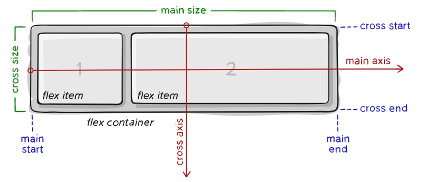

¿Qué es el flexbox?
Durante mucho tiempo, las únicas herramientas disponibles para crear diseños CSS y posicionar elementos con buena compatibilidad entre browsers eran float y position. Sin embargo, estas herramientas tienen algunas limitaciones muy frustrantes, especialmente cuando se trata de responsividad. Algunas tareas que consideramos básicas en un diseño, como centrar verticalmente un elemento secundario en relación con un elemento principal o hacer que los elementos secundarios ocupen la misma cantidad de espacio, o que las columnas tengan el mismo tamaño independientemente de la cantidad de contenido interno, fueron imposibles. La herramienta Flexbox (de Flexible Box) fue creada para hacer estas tareas más sencillas y funcionales: los secundarios de un elemento con Flexbox se pueden posicionar en cualquier dirección y pueden tener dimensiones flexibles para adaptarse.Elementos
Flexbox es un módulo completo y no una propiedad única; algunos de ellos deben declararse en el contenedor (el elemento principal, que llamamos de flex container), mientras que otros deben declararse en los elementos secundarios (el flex ítems). Si el diseño "estándar" se basa en las direcciones block e inline, el diseño Flex se basa en direcciones de "flex flow".
Propiedades del flex-container (padre)
| Propiedad | Función | Valor |
|---|---|---|
| Display | Esta propiedad define un flex container; inline o block dependiendo de los valores pasados. Coloca todos los elementos secundarios directos en un contexto Flex. | flex o inline-flex |
| Flex-direction | Establece el eje principal, definiendo así la dirección en la que los flex ítems están alineados en el flex container. | row, row-reverse, column o column-reverse |
| Flex-wrap | Con esta propiedad puedes modificar este comportamiento y permitir que los ítems pasen a la siguiente línea según sea necesario. | nowrap, wrap o wrap-reverse |
| Flex-flow | Determina cuáles serán los ejes principal y transversal del contenedor. | row nowrap, row wrap, column nowrap o column wrap |
| Justify-content | Define la alineación de los ítems a lo largo del eje principal. | flex-start, flex-end, center, space-between, space-around o space-evenly |
| Align-items | Establece el comportamiento estándar de cómo flex ítems están alineados según el eje transversal (cross axis). En cierto modo, funciona de manera similar al justify-content, pero en el eje transversal (perpendicular al eje principal). | stretch, flex-start, flex-end, center o baseline |
| Align-content | Organiza las líneas dentro de un flex container cuando hay espacio adicional en el eje transversal, similar a cómo justify-content alinea ítems individuales dentro del eje principal. | flex-start, flex-end, center, space-between, space-around o stretch |
Propiedades de flex-ítem (hijo)
| Propiedad | Función | Valor |
|---|---|---|
| Order | Determina el orden en que aparecerán los elementos. | número (0, 1, 2, 3...) |
| Flex-grow | Define la habilidad de un flex ítem de crecer, según el caso. El valor de esta propiedad es un valor numérico sin indicación de unidad, que se utiliza para calcular la proporción. | número (0, 1, 2, 3...) |
| Flex-shrink | Establece la habilidad de un flex ítem para contraerse, según el caso. | número (0, 1, 2, 3...) |
| Flex-basis | Establece el tamaño estándar de un elemento antes de que se distribuya el espacio remanente del contenedor. | auto, 4rem, 30%, etc... |
| Flex | Esta es la propiedad shorthand para flex-grow, flex-shrink y flex-basis, combinadas. | 0, 1 o auto |
| Align-self | Permite que la alineación estándar (o lo que esté definido por align-items) se sobrescriba para ítems individuales. | auto, flex-start, flex-end, center, baseline o strecth |